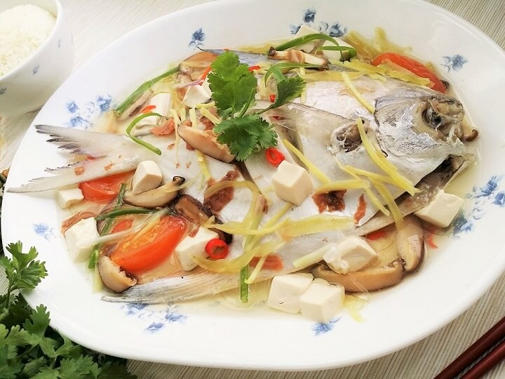

Home
teochewfish

This is the teochewfish, a dish originated from China that flavours in a hint of
sour kick with umami flavours, good nutrition in one dish, yum.
Ingredients
- Fish (pomfret,sea bass, snapper)
- Ginger
- Tomato diced
- Sour plum
- Salted mustard greens
- Garlic
- Chili (optional)
Steps
- Clean the fish, remove the scales and organs, make shallow cuts on both sides, lightly salt it, then rinse and pat dry.
- Prepare the ingredients by cutting the tomatoes, slicing the ginger, lightly crushing the garlic, and cracking the preserved sour plums.
- Heat oil in a pot and sauté the ginger and garlic until fragrant.
- Add preserved vegetables, tomatoes, and sour plums, then stir briefly.
- Pour in water or stock, bring to a boil, and season with salt and white pepper.
- Gently add the fish, cover, and simmer for 8 to 10 minutes until fully cooked, then garnish and serve.
Home